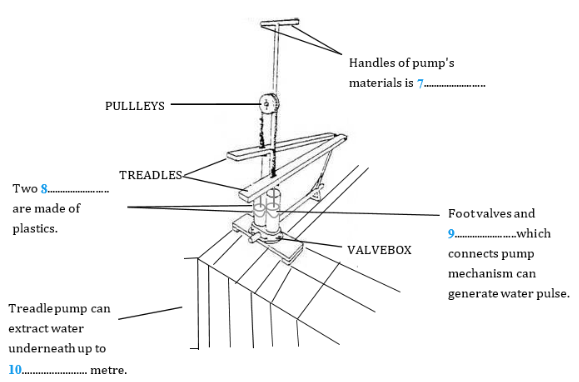

Part 1
READING PASSAGE 1
You should spend about 20 minutes on Questions 1-13 , which are based on Reading Passage 1 below.

Foot Pedal Irrigation
A Until now, governments and development agencies have tried to tackle the problem through large-scale projects: gigantic dams, sprawling, irrigation canals and vast new fields of high-yield crops introduced during the Green Revolution, the famous campaign to increase grain harvests in developing nations. Traditional irrigation, however, has degraded the soil in many areas, and the reservoirs behind dams can quickly fill up with silt, reducing their storage capacity and depriving downstream farmers of fertile sediments. Furthermore, although the Green Revolution has greatly expanded worldwide farm production since 1950, poverty stubbornly persists in Africa, Asia and Latin America. Continued improvements in the productivity of large farms may play the main role in boosting food supply, but local efforts to provide cheap, individual irrigation systems to small farms may offer a better way to lift people out of poverty.
B The Green Revolution was designed to increase the overall food supply, not to raise the incomes of the rural poor, so it should be no surprise that it did not eradicate poverty or hunger. India, for example, has been self-sufficient in food for 15 years, and its granaries are full, but more than 200 million Indians – one fifth of the country’s population – are malnourished because they cannot afford the food they need and because the country’s safety nets are deficient. In 2000, 189 nations committed to the Millennium Development Goals, which called for cutting world poverty in half by 2015. With business as usual, however, we have little hope of achieving most of the Millennium goals, no matter how much money rich countries contribute to poor ones.
C The supply-driven strategies of the Green Revolution, however, may not help subsistence farmers, who must play to their strengths to compete in the global marketplace. The average size of a family farm is less than four acres in India, 1.8 acres in Bangladesh and about half an acre in China. Combines and other modern farming tools are too expensive to be used on such small areas. An Indian farmer selling surplus wheat grown on his one-acre plot could not possibly compete with the highly efficient and subsidized Canadian wheat farms that typically stretch over thousands of acres. Instead subsistence farmers should exploit the fact that their labor costs are the lowest in the world, giving them a comparative advantage in growing and selling high-value, intensely farmed crops.
D Paul Polak saw firsthand the need for a small-scale strategy in 1981 when he met Abdul Rahman, a farmer in the Noakhali district of Bangladesh. From his three quarter-acre plots of rain-fed rice fields, Abdul could grow only 700 kilograms of rice each year – 300 kilograms less than what he needed to feed his family. During the three months before the October rice harvest came in, Abdul and his wife had to watch silently while their three children survived on one meal a day or less. As Polak walked with him through the scattered fields he had inherited from his father, Polak asked what he needed to move out of poverty. “Control of water for my crops,” he said, “at a price I can afford.”
E Soon Polak learned about a simple device that could help Abdul achieve his goal: the treadle pump. Developed in the late 1970s by Norwegian engineer Gunnar Barnes, the pump is operated by a person walking in place on a pair of treadles and two handle arms made of bamboo. Properly adjusted and maintained, it can be operated several hours a day without tiring the users. Each treadle pump has two cylinders which are made of engineering plastic. The diameter of a cylinder is 100.5mm and the height is 280mm. The pump is capable of working up to a maximum depth of 7 meters. Operation beyond 7 meters is not recommended to preserve the integrity of the rubber components. The pump mechanism has piston and foot valve assemblies. The treadle action creates alternate strokes in the two pistons that lift the water in pulses.
F The human-powered pump can irrigate half an acre of vegetables and costs only $25 (including the expense of drilling a tube well down to the groundwater). Abdul heard about the treadle pump from a cousin and was one of the first farmers in Bangladesh to buy one. He borrowed the $25 from an uncle and easily repaid the loan four months later. During the five-month dry season, when Bangladeshis typically farm very little, Abdul used the treadle pump to grow a quarter-acre of chili peppers, tomatoes, cabbage and eggplants. He also improved the yield of one of his rice plots by irrigating it. His family ate some of the vegetables and sold the rest at the village market, earning a net profit of $100. With his new income, Abdul was able to buy rice for his family to eat, keep his two sons in school until they were 16 and set aside a little money for his daughter’s dowry. When Polak visited him again in 1984, he had doubled the size of his vegetable plot and replaced the thatched roof on his house with corrugated tin. His family was raising a calf and some chickens. He told me that the treadle pump was a gift from God.
G Bangladesh is particularly well suited for the treadle pump because a huge reservoir of groundwater lies just a few meters below the farmers’ feet. In the early 1980s IDE initiated a campaign to market the pump, encouraging 75 small private-sector companies to manufacture the devices and several thousand village dealers and tube-well drillers to sell and install them. Over the next 12 years one and a half million farm families purchased treadle pumps, which increased the farmers’ net income by a total of $150 million a year. The cost of IDE’s market-creation activities was only $12 million, leveraged by the investment of $37.5 million from the farmers themselves. In contrast, the expense of building a conventional dam and canal system to irrigate an equivalent area of farmland would be in the range of $2,000 per acre, or $1.5 billion.
Part 2
READING PASSAGE 2
You should spend about 20 minutes on Questions 14-26 , which are based on Reading Passage 2 below.

Learning By Examples
A Learning theory is rooted in the work of Ivan Pavlov, the famous scientist who discover and documented the principles governing how animals (humans included) learn in the 1900s. Two basic kinds of learning or conditioning occur, one of which is famously known as the classical condition. Classical conditioning happens when an animal learns to associate a neutral stimulus (signal) with a stimulus that has intrinsic meaning based on how closely in time the two stimuli are presented. The classic example of classical conditioning is a dog’s ability to associate the sound of a bell (something that originally has no meaning to the dog) with the presentation of food (something that has a lot of meaning for the dog) a few moments later. Dogs are able to learn the association between bell and food, and will salivate immediately after hearing the bell once this connection has been made. Years of learning research have led to the creation of a highly precise learning theory that can be used to understand and predict how and under what circumstances most any animal will learn, including human beings, and eventually help people figure out how to change their behaviors.
B Role models are a popular notion for guiding child development, but in recent years very interesting research has been done on learning by example in other animals. If the subject of animal learning is taught very much in terms of classical or operant conditioning, it places too much emphasis on how we allow animals to learn and not enough on how they are equipped to learn. To teach a course of mine I have been dipping profitably into a very interesting and accessible compilation of papers on social learning in mammals, including chimps and human children, edited by Heyes and Galef.
C The research reported in one paper started with a school field trip to Israel to a pine forest where many pine cones were discovered, stripped to the central core. So the investigation started with no weighty theoretical intent, but was directed at finding out what was eating the nutritious pine seeds and how they managed to get them out of the cones. The culprit proved to be the versatile and athletic black rat (Rattus) and the technique was to bite each cone scale off at its base, in sequence from base to tip following the spiral growth pattern of the cone.
D Urban black rats were found to lack the skill and were unable to learn it even if housed with experiences cone strippers. However, infants of urban mothers cross fostered to stripper mothers acquired the skill, whereas infants of stripper mothers fostered by an urban mother could not. Clearly the skill had to be learned from the mother. Further elegant experiments showed that naive adults could develop the skill if they were provided with cones from which the first complete spiral of scales had been removed, rather like our new photocopier which you can word out how to use once someone has shown you how to switch it on. In case of rats, the youngsters take cones away from the mother when she is still feeding on them, allowing them to acquire the complete stripping skill.
E A good example of adaptive bearing we might conclude, but let’s see the economies. This was determined by measuring oxygen uptake of a rat stripping a cone in a metabolic chamber to calculate energetic cost and comparing it with the benefit of the pine seeds measured by calorimeter. The cost proved to be less than 10% of the energetic value of the cone. An acceptable profit margin.
F A paper in 1996 Animal Behavior by Bednekoff and Balda provides a different view of the adaptiveness of social learning. It concerns the seed catching behavior of Clark’s nutcracker (Nucifraga Columbiana) and the Mexican jay (Aphelocoma ultramarine). The former is a specialist, catching 30,000 or so seeds in scattered locations that it will recover over the months of winter, the Mexican jay will also cache food but is much less dependent upon this than the nutcracker. The two species also differ in their social structure, the nutcracker being rather solitary while the jay forages in social groups.
G The experiment is to discover not just whether a bird can remember where it hid a seed but also if it can remember where it saw another bird hide a seed. The design is slightly comical with a cacher bird wandering about a room with lots of holes in the floor hiding food in some of the holes, while watched by an observer bird perched in a cage. Two days later cachers and observers are tested for their discovery rate against an estimated random performance. In the role of cacher, not only nutcracker but also the less specialized jay performed above chance; more surprisingly, however, jay observers were as successful as jay cachers whereas nutcracker observers did no better than chance. It seems that, whereas the nutcracker is highly adapted at remembering where it hid its own seeds, the social living Mexican jay is more adept at remembering, and so exploiting, the caches of others.
Part 3
READING PASSAGE 3
You should spend about 20 minutes on Questions 27-39 , which are based on Reading Passage 3 below.

Eco-Resort Management
A Ecotourism is often regarded as a form of nature-based tourism and has become an important alternative source of tourists. In addition to providing the traditional resort-leisure product, it has been argued that ecotourism resort management should have a particular focus on best-practice environmental management, an educational and interpretive component, and direct and indirect contributions to the conservation of the natural and cultural environment (Ayala, 1996).
B Couran Cove Island Resort is a large integrated ecotourism-based resort located south of Brisbane on the Gold Coast, Queensland, Australia. As the world’s population becomes increasingly urbanised, the demand for tourist attractions which are environmentally friendly, serene and offer amenities of a unique nature, has grown rapidly. Couran Cove Resort, which is one such tourist attractions, is located on South Stradbroke Island, occupying approximately 150 hectares of the island. South Stradbroke Island is separated from the mainland by the Broadwater, a stretch of sea 3 kilometers wide. More than a century ago, there was only one Stradbroke Island, and there were at least four aboriginal tribes living and hunting on the island. Regrettably, most of the original island dwellers were eventually killed by diseases such as tuberculosis, smallpox and influenza by the end of the 19th The second ship wreak on the island in 1894, and the subsequent destruction of the ship (the Cambus Wallace) because it contained dynamite, caused a large crater in the sandhills on Stradbroke Island. Eventually, the ocean broke through the weakened land form and Stradbroke became two islands. Couran Cove Island Resort is built on one of the world’s few naturally-occurring sand lands, which is home to a wide range of plant communities and one of the largest remaining remnants of the rare livistona rainforest left on the Gold Coast. Many mangrove and rainforest areas, and Malaleuca Wetlands on South Stradbroke Island (and in Queensland), have been cleared, drained or filled for residential, industrial, agricultural or urban development in the first half of the 20th century. Farmer and graziers finally abandoned South Stradbroke Island in 1939 because the vegetation and the soil conditions there were not suitable for agricultural activities.
SUSTAINABLE PRACTICES OF COURAN COVE RESORT
Being located on an offshore island, the resort is only accessible by means of water transportation. The resort provides hourly ferry service from the marina on the mainland to and from the island. Within the resort, transport modes include walking trails, bicycle tracks and the beach train. The reception area is the counter of the shop which has not changed in 8 years at least. The accommodation is an octagonal “Bure”. These are large rooms that are clean but! The equipment is tired and in some cases just working. Our ceiling fan only worked on high speed for example. Beds are hard but clean, there is television, radio, an old air conditioner and a small fridge. These “Bures” are right on top of each other and night noises do carry so be careful what you say and do. The only thing is the mosquitos but if you forget to bring mosquito repellant they sell some on the island.
As an ecotourism-based resort, most of the planning and development of the attraction has been concentrated on the need to co-exist with the fragile natural environment of South Stradbroke Island to achieve sustainable development.
WATER AND ENERGY MANAGEMENT
C South Stradbroke Island has groundwater at the centre of the island, which has a maximum height of 3 metres above sea level. The water supply is recharged by rainfall and is commonly known as an unconfined freshwater aquifer. Couran Cove Island Resort obtains its water supply by tapping into this aquifer and extracting it via a bore system. Some of the problems which have threatened the island’s freshwater supply include pollution, contamination and over-consumption. In order to minimise some of these problems, all laundry activities are carried out on the mainland. The resort considers washing machines as onerous to the island’s freshwater supply, and that the detergents contain a high level of phosphates which are a major source of water pollution. The resort uses LPG-power generation rather than a diesel-powered plant for its energy supply, supplemented by wind turbine, which has reduced greenhouse emissions by 70% of diesel-equivalent generation methods. Excess heat recovered from the generator is used to heat the swimming pool. Hot water in the eco-cabins and for some of the resort’s vehicles are solar-powered. Water efficient fittings are also installed in showers and toilets. However, not all the appliances used by the resort are energy efficient, such as refrigerators. Visitors who stay at the resort are encouraged to monitor their water and energy usage via the in-house television system, and are rewarded with prizes (such as a free return trip to the resort) accordingly if their usage level is low.
CONCLUDING REMARKS
D We examined a case study of good management practice and a pro-active sustainable tourism stance of an eco-resort. In three years of operation, Couran Cove Island Resort has won 23 international and national awards, including the 2001 Australian Tourism Award in the 4-Star Accommodation category. The resort has embraced and has effectively implemented contemporary environmental management practices. It has been argued that the successful implementation of the principles of sustainability should promote long-term social, economic and environmental benefits, while ensuring and enhancing the prospects of continued viability for the tourism enterprise. Couran Cove Island Resort does not conform to the characteristics of the ResortDevelopmentSpectrum, as proposed by Prideaux (2000). According to Prideaux, the resort should be at least at Phase 3 of the model (the National tourism phase), which describes an integrated resort providing 3-4 star hotel-type accommodation. The primary tourist market in Phase 3 of the model consists mainly of interstate visitors. However, the number of interstate and international tourists visiting the resort is small, with the principal visitor markets comprising locals and residents from nearby towns and the Gold Coast region. The carrying capacity of Couran Cove does not seem to be of any concern to the Resort management. Given that it is a private commercial ecotourist enterprise, regulating the number of visitors to the resort to minimize damage done to the natural environment on South Stradbroke Island is not a binding constraint. However, the Resort’s growth will eventually be constrained by its carrying capacity, and quantity control should be incorporated in the management strategy of the resort.
Part 1
Questions 1-6
Do the following statements agree with the information given in Reading Passage?
In boxes 1 – 6 on your answer sheet, write
| TRUE. | if the statement agrees with the information | |
| FALSE. | if the statement contradicts the information | |
| NOT GIVEN. | If there is no information on this |
1.
2.
3.
4.
5.
6.
Questions 7-10
Filling the blanks in diagram of treadle pump’s each parts.
Choose NO MORE THAN THREE WORDS AND/OR A NUMBER from the passage for each answer.

7
8
9
10
Questions 11-13
Answer the questions below.
Choose NO MORE THAN THREE WORDS AND/OR A NUMBER from the passage for each answer.
How large area can a treadle pump irrigate the field at a low level of expense?
11
What is Abdul’s new roof made of?
12
How much did Bangladesh farmers invest by IDE’s stimulation?
13
Part 2
Questions 14-17
Reading Passage has seven paragraphs, A – G.
Which paragraph contains the following information?
Write the correct letter, A – G, in boxes 1 – 4 on your answer sheet.
14.
15.
16.
17.
Questions 18-21
Do the following statements agree with the information given in Reading Passage?
In boxes 18 – 21 on your answer sheet write
| TRUE. | if the statement agrees with the information | |
| FALSE. | if the statement contradicts the information | |
| NOT GIVEN. | If there is no information on this |
18.
19.
20.
21.
Questions 22-26
Complete the summary below using words from the box.
Write your answers in boxes 22 – 26 on your answer sheet.
While the Nutcracker is more able to cache see, the Jay relies 22 on caching food and is thus less specialized in this ability, but more 23 To study their behavior of caching and finding their caches, an experiment was designed and carried out to test these two birds for their ability to remember where they hid the seeds. In the experiment, the cacher bird hid seeds in the ground while the other 24 As a result, the Nutcracker and the Mexican Jay showed different performance in the role of 25 at finding the seeds—the observing 26 didn’t do as well as its counterpart. |
| less | more | solitary | social | cacher |
| observer | remembered | watched | Jay | Nutcracker |
Part 3
Questions 37-39
Choose THREE correct letters among, A-E.
Write your answers in boxes 37-39 on your answer sheet.
What is true as to the contemporary situation of Couran Cove Island R in the last paragraph
Questions 27-31
Choose the correct letter, A, B, C or D.
Write your answers in boxes 27-31 on your answers sheet.
Questions 32-36
Complete the following summary of the Reading Passage, using NO MORE THAN TWO WORDS from the Reading Passage for each answer.
Write your answers in boxes 32-36 on your answer sheet.
Being located away from the mainland, tourists can attain the resort only by 32 in a regular service. Within the resort, transports include trails for walking or tracks for both 33 and the beach train. The on-island equipment is old-fashioned which is barely working such as the 34 overhead. There is television, radio, an old 35 and a small fridge. And you can buy the repellant for 36 if you forget to bring some.